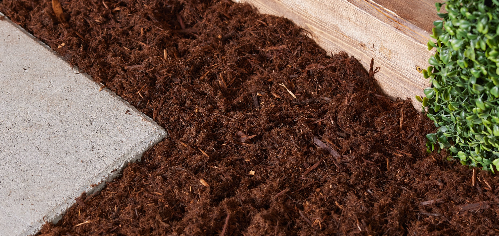
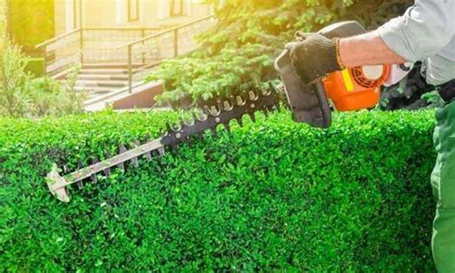
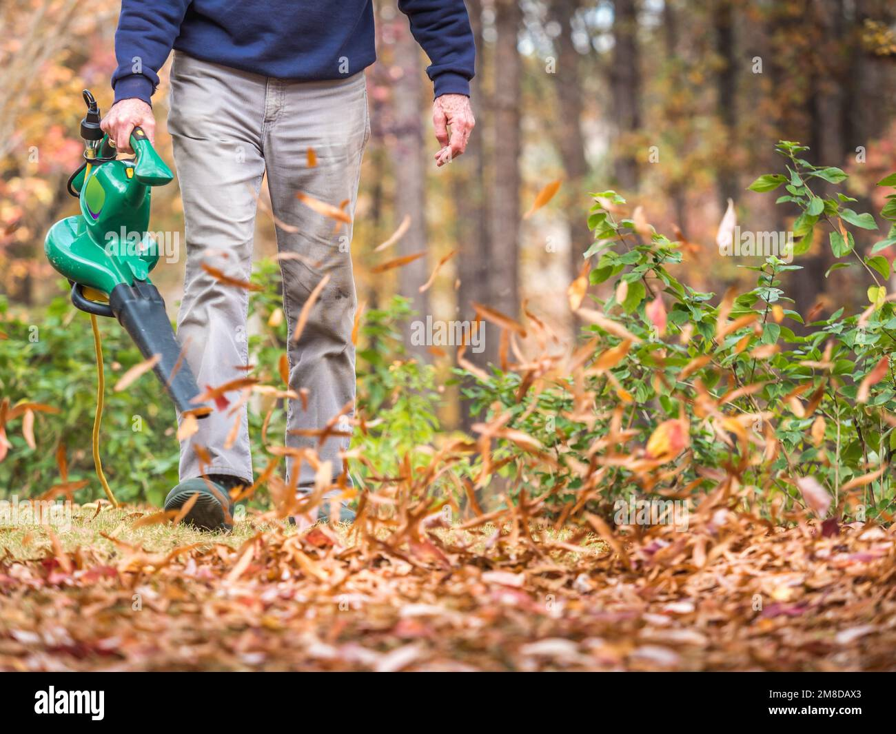
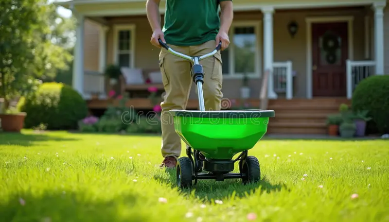
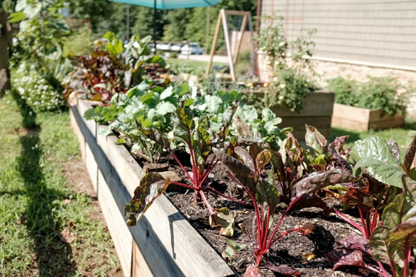
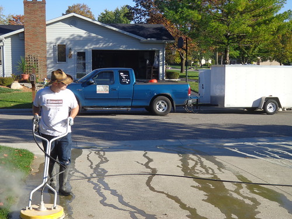

What We Do
Professional Lawn Care & Landscaping Services Tailored to Your Property
From routine lawn maintenance and mowing to full landscape transformations, mulching, pressure washing, fertilization, and seasonal cleanups, Wild Lawn Lawncare LLC has you covered. Each service is tailored to Metro Atlanta's unique climate, soil conditions, and growing season to ensure optimal results for your property.

Lawn Maintenance
Professional mowing, trimming, edging, and blowing to keep your lawn pristine all season long.
Atlanta lawns feature a variety of warm-season and cool-season grass types, and each one demands a specific approach to mowing and maintenance. At Wild Lawn Lawncare LLC, we work with Bermuda grass, Zoysia grass, and Tall Fescue — the three most common turf varieties found across Metro Atlanta properties. Bermuda grass thrives in full sun and should be mowed at 1 to 1.5 inches during the peak Georgia summer heat, while Zoysia performs best at 1.5 to 2 inches. Fescue, a cool-season grass popular in shaded North Georgia yards, requires a higher cut of 3 to 3.5 inches to survive the summer stress. Our growing season runs from March through October, which means your lawn needs consistent weekly attention for roughly eight months of the year. We use commercial-grade zero-turn mowers, professional string trimmers, and precision edgers to deliver a clean, striped finish on every visit. Each service includes mowing at the proper height for your grass type, line trimming around obstacles, sidewalk and driveway edging, and a thorough blowing of all hard surfaces to leave your property looking immaculate.

Mulching & Bed Maintenance
Fresh mulch installation, bed edging, and weed removal to enhance your landscape beds.
Proper mulching is one of the most effective ways to protect your landscape beds, retain soil moisture, and suppress weed growth throughout Metro Atlanta's long growing season. Wild Lawn Lawncare LLC offers a full range of mulch options including natural hardwood mulch, pine straw, and dyed mulch in brown, black, and red varieties. We install mulch at the recommended depth of 2 to 3 inches, which provides optimal insulation for plant roots without suffocating them. Georgia's heavy red clay soil presents unique drainage challenges, and a well-maintained mulch layer helps regulate soil temperature and prevent erosion during our frequent summer thunderstorms. Our mulching service includes removing old, decomposed mulch when necessary, re-defining clean bed edges with a professional bed edger, pulling existing weeds by hand, and applying a fresh layer of your chosen mulch material. We recommend a seasonal refresh in early spring and again in late fall to keep beds looking sharp and functioning properly year-round. Whether you have a few small beds or an entire property perimeter, our crew delivers fast, clean, and professional mulch installation every time.

Bush & Shrub Care
Expert trimming, shaping, and health care for your bushes and shrubs year-round.
Metro Atlanta landscapes are filled with beautiful shrubs and ornamental plants that require expert care to maintain their shape, health, and visual appeal. Wild Lawn Lawncare LLC specializes in pruning and shaping common Georgia shrubs including azaleas, boxwood, holly, ligustrum, loropetalum, and Indian hawthorn. Timing is critical when it comes to pruning — azaleas and other spring-blooming shrubs should be trimmed immediately after flowering to avoid cutting off next year's buds, while evergreens like boxwood and holly can be shaped in late spring and again in early fall. Our crew understands the bloom cycles of every common Metro Atlanta shrub species and schedules pruning accordingly. Beyond shaping, we inspect your shrubs for signs of common Georgia plant diseases such as leaf spot, powdery mildew, and root rot, which are especially prevalent in our humid subtropical climate. We also check for pest infestations including scale, spider mites, and lace bugs. Regular professional shrub care not only keeps your property looking manicured but also promotes dense, healthy growth and extends the lifespan of your landscape investment.

Seasonal Cleanups
Complete leaf removal, debris hauling, and property cleanup for fall, winter, and spring transitions.
Atlanta's tree canopy is one of the most beautiful in the Southeast, but it also means homeowners deal with significant leaf and debris accumulation throughout the year. Our seasonal cleanup service addresses fall leaf removal from heavy-shedding species like oaks, maples, and sweetgum trees that dominate Metro Atlanta neighborhoods. Sweetgum seed pods and oak acorns can be particularly troublesome, creating slippery surfaces and clogging drainage areas if not properly cleared. In spring, we remove winter storm debris, fallen branches, dead foliage, and accumulated pine straw that has blown out of beds and onto lawns and walkways. Pine straw management is an ongoing concern in North Georgia, where loblolly and shortleaf pines drop needles year-round. Our cleanup crews use commercial-grade backpack blowers, truck-mounted vacuum systems, and tarps to efficiently clear your entire property. We also address gutter-adjacent areas where leaves and debris tend to accumulate against foundations and along fence lines. Each seasonal cleanup prepares your lawn and landscape for the coming season, ensuring proper air circulation, sunlight penetration, and a clean slate for healthy turf growth.

Fertilization & Weed Control
Science-based fertilization programs and targeted weed control for a thick, healthy lawn.
A healthy, weed-free lawn in Metro Atlanta requires a carefully timed fertilization and weed control program tailored to Georgia's unique climate and soil conditions. Wild Lawn Lawncare LLC offers a comprehensive 5 to 7 step annual program designed specifically for Atlanta-area lawns. The program begins in February or early March with a pre-emergent herbicide application to prevent crabgrass and other annual weeds from germinating before they take hold in your turf. Subsequent applications throughout the growing season include balanced granular fertilizer treatments, post-emergent weed control for broadleaf weeds like clover and dandelions, and targeted treatments for stubborn invaders like nutsedge and dallisgrass. Georgia's native clay soil is naturally acidic, often with a pH below 6.0, which can limit nutrient uptake and stunt grass growth. We recommend professional soil testing to determine your lawn's exact pH and nutrient levels, and we apply agricultural lime as needed to raise the pH to the optimal range for your turf type. Our fertilization blends are selected based on your grass species and soil test results, ensuring the right balance of nitrogen, phosphorus, and potassium for vigorous root development and a deep green color all season long.

Landscape Design
Custom landscape design and installation to transform your outdoor spaces into stunning retreats.
Wild Lawn Lawncare LLC provides custom landscape design services tailored to Metro Atlanta's growing conditions and your personal aesthetic vision. Our design process begins with an on-site consultation where we assess your property's sun exposure, existing vegetation, drainage patterns, and soil composition. Atlanta falls within USDA hardiness zones 7b and 8a, which gives us access to an incredible range of plant material including native Georgia species like oakleaf hydrangea, Carolina jessamine, and coreopsis, as well as popular ornamentals like crepe myrtles, knockout roses, and ornamental grasses. Georgia's heavy clay soil presents unique drainage challenges that must be addressed in any landscape design — we incorporate French drains, dry creek beds, grading solutions, and permeable hardscape materials to manage water flow and prevent erosion. Our designs seamlessly integrate softscape plantings with hardscape elements such as natural stone walkways, retaining walls, paver patios, and fire pit areas. We work with you from initial concept through final installation, providing detailed design drawings and plant schedules so you know exactly what your finished landscape will look like before any work begins.

Pressure Washing
Professional pressure washing for houses, driveways, patios, and fences to restore their original shine.
Atlanta homeowners know that pollen season is no joke — every spring, a thick yellow-green coating of pine and oak pollen blankets driveways, siding, porches, and outdoor furniture across Metro Atlanta. Wild Lawn Lawncare LLC offers professional pressure washing and soft washing services to restore your home's exterior surfaces to like-new condition. We use two distinct cleaning methods depending on the surface: traditional high-pressure washing for concrete driveways, sidewalks, and patios, and a gentler soft wash technique for vinyl siding, painted surfaces, roofs, and wood decks and fences. Soft washing uses low-pressure water combined with specialized biodegradable cleaning solutions to safely remove algae, mold, mildew, and pollen without damaging delicate surfaces. Our pressure washing services are especially popular in spring after pollen season peaks and in fall before holiday gatherings. We clean driveways, garage floors, house exteriors, screened porches, pool decks, wooden fences, brick and stone walkways, and retaining walls. Regular pressure washing not only improves your property's curb appeal but also prevents long-term damage from organic growth that can deteriorate surfaces over time.